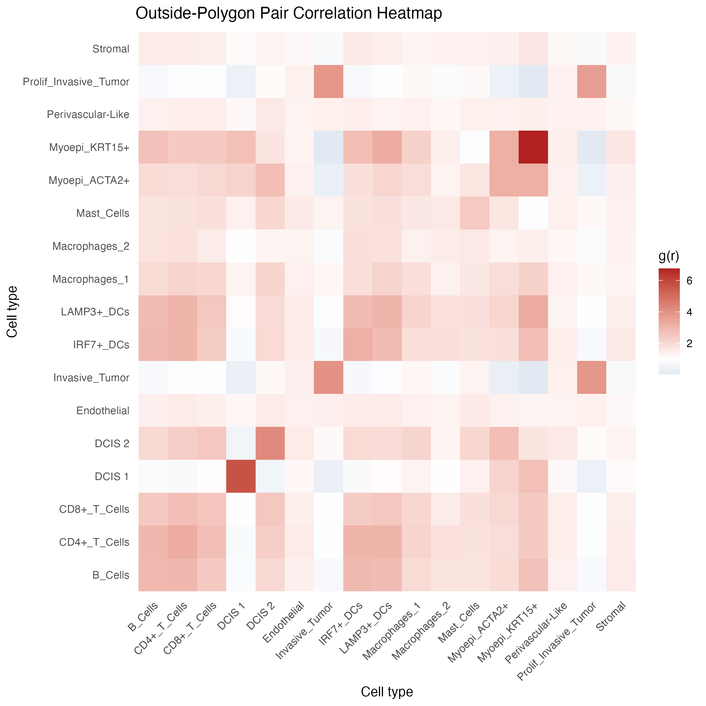

PCF Analysis
pcf-analysis.RmdIntroduction
stGradient includes optimized helpers for spatstat-based
Pair Correlation Function (PCF) analysis. These functions specifically
analyze spatial co-occurrence of cell types outside
tumor polygons, characterizing the peritumoral microenvironment
architecture.
Prerequisites
PCF analysis requires the spatstat.geom and
spatstat.explore packages:
install.packages(c("spatstat.geom", "spatstat.explore"))You also need a Seurat object with polygons defined (see Region Selection).
Computing PCF Summary
Calculate cross-type PCF values at a specific target distance:
library(stGradient)
pcf_summary <- calculate_pcf_outside_summary(
seurat_obj = seurat_obj,
polygons = auto_polygons,
distance = 200,
min_cells = 10,
celltype_col = "first_type",
include_self_pairs = TRUE,
ordered_pairs = FALSE
)Parameters
-
distance— target radius (microns) at which to evaluate the PCF -
min_cells— minimum cells per cell type to include in the analysis -
include_self_pairs— whether to compute same-type PCF (e.g., A-A) -
ordered_pairs—FALSEcomputes each pair once (A-B);TRUEcomputes both (A-B and B-A) -
tissue_window— tissue outline used as the observation window:"concave"(default, concave hull of all cells),"convex", or"bbox". Tumor polygons are always removed from the window, since outside cells cannot occur there; leaving them in biases g(r) upward. Pass your own tissue outline withwindow_obj. -
bw— kernel bandwidth in microns (default 10). Use the samebwhere and inplot_pcf_outside_pair_envelopes()so heatmap values match the envelope curves.
Heatmap Visualization
Visualize all pairwise PCF values as a heatmap:
plot_pcf_outside_heatmap(pcf_summary, midpoint = 1)
The midpoint at 1 represents complete spatial randomness, with warm colors indicating co-occurrence and cool colors indicating avoidance.
Envelope Curves
Generate Monte Carlo envelope curves for all cell-type pairs to assess statistical significance:
env_list <- plot_pcf_outside_pair_envelopes(
seurat_obj = seurat_obj,
polygons = auto_polygons,
celltype_col = "first_type",
min_cells = 10,
include_self_pairs = FALSE,
ordered_pairs = FALSE,
nsim = 39,
bw = 10,
null_model = "band_permutation",
band_width = 25,
file = "pcf_outside_all_pairs.png"
)This saves one PNG per cell-type pair
(e.g. pcf_outside_all_pairs_TypeA_vs_TypeB.png) showing the
observed PCF against simulation envelopes.
Global vs. Pointwise Envelopes
envelope_type controls how the envelope can be read:
-
"global"(default) — a simultaneous envelope over the distance ranger_range(default: frombwup to the largest distance computed). If the observed curve leaves the band anywhere in that range, the pattern differs from the null at significance level1 / (nsim + 1), e.g. 0.05 fornsim = 19and 0.01 fornsim = 99. Each envelope also carries a MAD test p-value inattr(env, "p_value"). The band has the same width at every distance. -
"pointwise"— a separate envelope at each distance, with a two-sided significance level of2 / (nsim + 1)at each single distance. Scanning the curve for any distance outside the band inflates false positives (in simulations, about half of random-label datasets left a 19-simulation pointwise envelope somewhere between 10 and 80 µm), so use it only for a distance chosen in advance.
Choosing a Null Model
null_model sets what the envelopes are simulated
under:
-
"csr"(default) — cells placed uniformly at random in the outside-tumor window with independent labels. Tissue is rarely uniform, so most pairs will fall outside these envelopes. -
"band_permutation"— cell positions are kept and cell-type labels are shuffled among cells in the same distance band from the tumor boundary (band_widthmicrons wide). Two cell types that are both enriched near the tumor will not appear co-localized just because of that shared gradient. Setband_width = Infto shuffle labels across all outside cells.
Single-Pair PCF Plot
For focused analysis of specific cell-type pairs:
plot_pcf_pair_gg(env_list, "TypeA", "TypeB")

PCF by Distance Band
calculate_pcf_by_band() splits the outside-tumor region
into bands that follow the tumor contour (e.g. 0–50, 50–100, 100–150 µm
from the boundary) and computes g(r) for every cell-type pair separately
in each band. This shows whether co-localization changes with distance
from the tumor.
band_pcf <- calculate_pcf_by_band(
seurat_obj = seurat_obj,
polygons = auto_polygons,
celltype_col = "cellType",
band_width = 50, # or band_breaks = c(0, 25, 50, 100, 200)
max_distance = 200,
approach = "restricted", # or "anchored"
distance = 20, # cell-to-cell r; can be a vector
null_model = "label_shuffle",
nsim = 99
)
plot_pcf_band_heatmap(band_pcf) # one heatmap per band, * = p_adj < 0.05
plot_pcf_band_profile(band_pcf) # g vs. distance from tumor, per pairTwo approaches:
-
"restricted"— each band is its own window; both cell types come from the band. Answers “within this band, are B cells concentrated around A cells, given the band’s cell mix?”. Bands are thin, so keepdistanceat or below the band width. -
"anchored"— anchor (type 1) cells come from the band; neighbor (type 2) cells can be anywhere outside the tumor. Answers “around A cells in this band, how dense are B cells at distance r?”. Directional, so ordered pairs are used. Largerdistancevalues are usable.
Null models (nsim simulations, two-sided Monte Carlo
p-value per band, pair and distance; p_adj is BH-adjusted
across all of them):
-
"label_shuffle"— positions kept, labels permuted within the band (anchored: within every band, preserving the tumor gradient). -
"csr"— restricted: cells relocated uniformly within the band; anchored: anchors fixed, all other cells relocated uniformly in the outside window. Also flags ordinary clumping and, for anchored, the tumor gradient. -
"none"— observed g only.
In anchored mode, raw g is high for every anchor type near the tumor
because neighbor density there is higher than average. Use
plot_pcf_band_heatmap(band_pcf, value = "g_over_null") to
show g relative to the null. The band polygons are stored in
attr(band_pcf, "bands") for plotting.
Notes
- These PCF helpers analyze only cells outside polygons by design
-
nsimis required; more simulations take longer. Withnull_model = "band_permutation"and a global envelope,2 * nsimpermutations are run (the second set estimates the null mean) - The
bwparameter controls PCF bandwidth smoothing and defaults to 10 µm in both the summary and the envelopes - Underlying computation uses the
spatstatecosystem
Next Steps
- Gene-Distance Analysis — model gene expression as a function of boundary distance